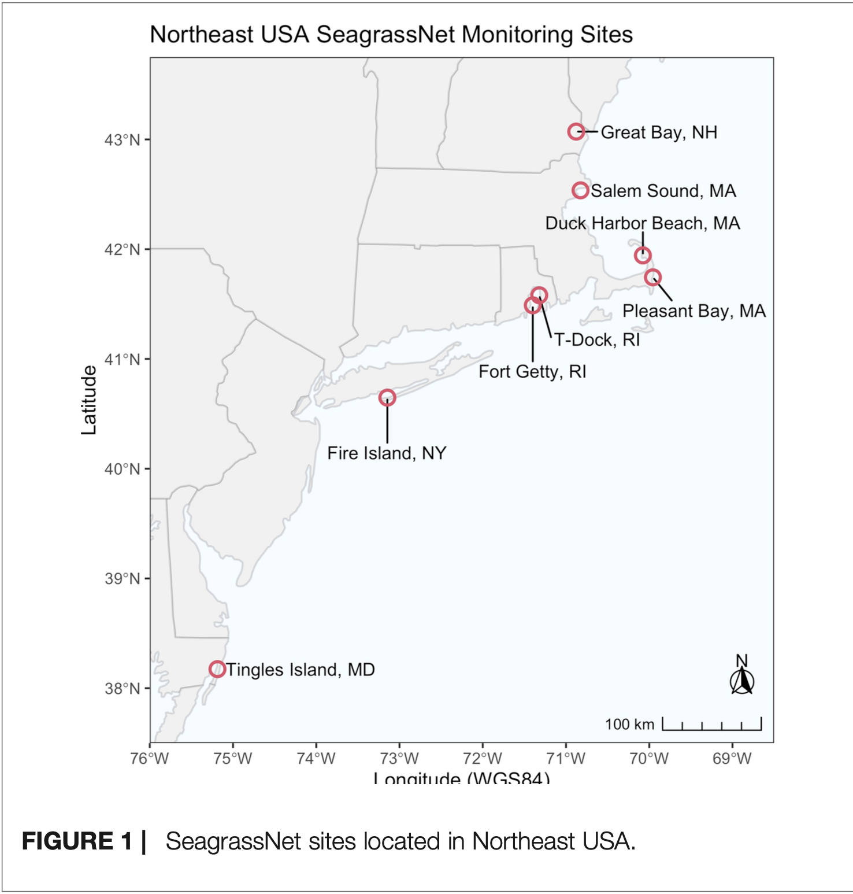

#'--------------------------
#' Eelgrass cover data from Plaisted et al. 2022: https://doi.org/10.3389/fmars.2022.920699
#' Data download:
#' https://datadryad.org/landing/show?id=doi%3A10.5061%2Fdryad.z34tmpggg#citations
#'--------------------------
# NOTE - This data only includes the shallowest transects, to standardize depth.
# This is transect "A" in all cases, except for Fire Island it is "B"
eelgrass_data <- read_csv(here::here("data/doi_10_5061_dryad_z34tmpggg__v20220628/seagrass_for_modeling.csv")) |>
rename(site = location)
eelgrass_data <- eelgrass_data |>
mutate(
# create centered temperature variable
temp_centered_prev = prior_yr_mean_daily_mean_temp - period_avg_mean_daily_mean_temp
)Impact of Summer SST Anomalies on Northeastern US Eelgrass Cover
Introduction
Eelgrass, Zostera marina, is the predominant seagrass species in the U.S. and is known to provide a foundational coastal habitat in addition to numerous ecosystem services. In light of the value the species provides, significant population declines observed along the northeastern U.S. coast over the last three decades are a cause for concern. Numerous causes for the declines have been proposed and investigated, including nutrient pollution, climate change driven temperature stress, sediment disruption, and light availability.(Jabbari et al. 2024) Substantial focus has been placed on investigating the impacts of temperature stress in the northeast U.S. region due to the particularly high rates of warming in marine ecosystems (Plaisted et al. 2022) (Seidov, Mishonov, and Parsons 2021). Existing studies tend to utilize in-situ water temperature measurements, such as buoy and seafloor measurements, as these are known to be the most accurate reflection of actual temperature conditions for eelgrass (Plaisted et al. 2022). However given the challenges of collecting in-situ measurements over large spatial extents, there is a need to be able to utilize alternative water temperature measurements with larger spatial resolutions and extents for eelgrass studies, especially as eelgrass mapping data improves (Jabbari et al. 2024).
The purpose of this study is to investigate whether SST anomalies can be used a proxy for more accurate in-situ water temperature measurements. The primary approach I take is to conduct an analysis similar to that of Plaisted et al. 2022 (Plaisted et al. 2022), in which eelgrass cover is predicted by sea surface temperature (SST) anomalies, except using satellite derived SST measurements in place of in-situ measurements. I hypothesize that summer SST anomalies one year prior to monitoring, measured via remote sensing, affect eelgrass presence and abundance on a northeastern U.S. regional scale. I attempt to test this hypothesis using a Mundlak regression approach in order to draw a causal connection between SST anomalies and eelgrass cover using observational data.
Methods
Data Sources
Eelgrass monitoring data for this analysis comes from SeagrassNet.org but was accessed via the data download from Plaisted et al. 2022 (Plaisted et al. 2022). The data provided by Plaisted et al. 2022 provided additional years of monitoring data for some sites which were not yet available on SeagrassNet.org. The monitoring data used includes eelgrass percent cover measurements taken during peak growing season according to a standardized global SeagrassNet protocol (Plaisted et al. 2022). Measurements are taken along 50-m transects parallel to the shoreline, each containing 12 quadrats.

Figure 1 - Map of the 8 northeastern U.S. SeagrassNet eelgrass monitoring sites examined in this study. Figure from (Plaisted et al. 2022).
Monitoring for SeagrassNet includes multiple transects at varying depths, however for this analysis only the shallowest transects were included, as was the case for Plaisted et al. 2022, in an attempt to standardize the depth of measurements analyzed. Inclusion of only the shallowest transects is also preferred for this analysis as SST is more likely to be representative of seafloor temperatures in shallower transects. Eight sites are included in the analysis ranging in latitude along the northeast coast of the US, from Maryland up to New Hampshire. As the collected data is non-clustered (Correia, Dee, and Ferraro 2025), with only a single transect at each site, I cannot distinguish between latitude and site effects, and thus latitude effects are grouped in with site effects.
SST data for this analysis comes from the NASA Jet Propulsion Laboratory’s Multi-scale Ultra-high Resolution (MUR) Sea Surface Temperature Daily 1km East Coast EEZ data set, and was accessed via the NOAA CoastWatch ERDDAP. For each monitoring site, the most proximal square kilometer measurement was selected. The Great Bay monitoring site in NH is located within the Great Bay Estuary, which was not fully covered by the JPL SST data set. The most proximal SST measurement, at the mouth of the estuary, was used as a proxy in this analysis. Annual summer mean temperatures were calculated as the mean of all daily temperatures in the months of June, July, and August. The average mean summer SST (AMS-SST) was calculated as the mean of all daily temperatures for a given site in the months of June, July, and August across all of the “previous” years, 2002-2020.
The predictor of interest in this analysis is defined as the group mean-centered summer SST from the year prior to eelgrass monitoring, which is calculated as the different between the previous summer’s mean temperature at a given site-year and AMS-SST at that site for all “previous” years (2002-2020) in the study period (2003-2021). For simplicity, I will refer to this predictor as the previous summer SST anomaly (PS-SSTA) going forward.
# ---
# SST data previously downloaded from NOAA CoastWatch ERDDAP
# Subsetted data stored on local drive for speed of access locally
# Original SST data source:
# Sea Surface Temperature, Multi-scale Ultra-high Resolution (MUR JPL),
# Daily 1km East Coast EEZ
# June 2002 - August 2022
# https://coastwatch.noaa.gov/erddap/info/noaacwecnMURdaily/index.html
# ---
# Load each SST df, adding column for site name
sst_data_dh <- read_csv(here::here("data/noaa_coastwatch_sst/sst_data_dh.csv")) |> mutate(site = "Duck Harbor Beach")
sst_data_fg <- read_csv(here::here("data/noaa_coastwatch_sst/sst_data_fg.csv")) |> mutate(site = "Fort Getty")
sst_data_fi <- read_csv(here::here("data/noaa_coastwatch_sst/sst_data_fi.csv")) |> mutate(site = "Fire Island")
sst_data_gb_proxy <- read_csv(here::here("data/noaa_coastwatch_sst/sst_data_gb_proxy.csv")) |> mutate(site = "Great Bay")
sst_data_pb <- read_csv(here::here("data/noaa_coastwatch_sst/sst_data_pb.csv")) |> mutate(site = "Pleasant Bay")
sst_data_pi <- read_csv(here::here("data/noaa_coastwatch_sst/sst_data_pi.csv")) |> mutate(site = "T-Dock")
sst_data_ti <- read_csv(here::here("data/noaa_coastwatch_sst/sst_data_ti.csv")) |> mutate(site = "Tingles Island")
sst_data_wb <- read_csv(here::here("data/noaa_coastwatch_sst/sst_data_wb.csv")) |> mutate(site = "Salem Sound")
# Bind data vertically
sst_data <-
bind_rows(
sst_data_dh,
sst_data_fg,
sst_data_fi,
sst_data_gb_proxy,
sst_data_pb,
sst_data_pi,
sst_data_ti,
sst_data_wb
) |>
# Remove unnecessary columns (long, lat, level)
select(-c(latitude, longitude, level)) |>
# Add columns for year and month
mutate(year = year(time),
month = month(time))
# Remove unnecessary dfs from environment
remove(list = c("sst_data_dh", "sst_data_fg", "sst_data_fi", "sst_data_gb_proxy",
"sst_data_pb", "sst_data_pi", "sst_data_ti", "sst_data_wb"))
# # Viz all data
# ggplot(sst_data, aes(x = time, y = sst)) +
# geom_point() +
# facet_wrap(~site)
# Calculate summer mean values (June - August)
sst_summer_means <- sst_data |>
filter(month %in% c(6,7,8)) |>
group_by(year, site) |>
summarize(mean_sst = mean(sst), .groups = "drop")
# Calculate average summer mean by site across entire time period of "previous year" (2002-2020)
sst_summer_average_means <- sst_data |>
filter(month %in% c(6,7,8)) |>
filter(year %in% c(2002:2020)) |>
group_by(site) |>
summarize(average_mean_sst = mean(sst), .groups = "drop")
# Create df with centered mean summer temperatures
# (Calculate difference between each site summer mean and site average summer mean)
sst_summer <- sst_summer_means |>
left_join(sst_summer_average_means, by = c("site")) |>
mutate(sst_centered = mean_sst - average_mean_sst) |>
# create column for previous summer's centered sst
arrange(site, year) |>
group_by(site) |>
mutate(
mean_sst_prev = lag(mean_sst),
sst_centered_prev = lag(sst_centered)) |>
ungroup()
# Visualize
# ggplot(sst_summer,
# aes(x = year, y = sst_centered, color = site)) +
# geom_line()Prior to initiating the analysis, I wanted to understand how well the JPL SST data aligned with the temperature data used in the Plaisted et al. 2022 study. For each site, I plotted JPL SST summer mean SST data and the calculated PS-SSTA alongside the corresponding values from buoy and transect data published by Plaisted et al. (Figure 2). I ran a linear regression with JPL SST as a predictor for the temperatures used by Plaisted et al., with site as a random effect, to examine correlation. The high conditional \(R^2\) value of 0.873 suggested that the entire model explained the variance well, however the marginal \(R^2\) of 0.537 indicated that the JPL SST did not fully explain the variance of the data used by Plaisted et al. This unexplained variance suggested that I might get different results from my eelgrass percent cover models compared with Plaisted et al. 2022.
# Previous Summer mean sst
ggplot(temp_compare_long, aes(x = year, y = mean_summer_sst_prev, color = source)) +
geom_line() +
facet_wrap(~site) +
labs(x = "Year",
y = "Previous Summer Mean SST (°C)",
color = "Data Source"
) +
scale_color_discrete(
labels = c("coastwatch_mean_summer_sst_prev" = "NASA JPL",
"plaisted_mean_summer_sst_prev" = "Plaisted at al. 2022"))
# Previous summer centered mean sst
ggplot(centered_temp_compare_long, aes(x = year, y = centered_mean_summer_sst_prev, color = source)) +
geom_line() +
facet_wrap(~site) +
labs(x = "Year",
y = "Centered Previous Summer Mean SST (°C)",
color = "Data Source"
) +
scale_color_discrete(
labels = c("coastwatch_centered_sst_prev" = "NASA JPL",
"plaisted_centered_sst_prev" = "Plaisted at al. 2022"))
# After observing that the satellite SSTs were consistently lower than in situ measurements
# except at Salem Sound, I reported this discrepency to Mass Bays, who informed me that the
# shallowest transect depth at Salem South is significantly deeper than at other sites. Figure 2 - a) NASA Jet Propulsion Lab SST satellite measurements during the study period plotted alongside in-situ (bouy and seafloor transect) temperature measurements used by (Plaisted et al. 2022). b) SST Anomalies calculated from NASA Jet Propulsion Lab SST during the study period plotted alongside SST anomalies from in-situ temperature measurements used by (Plaisted et al. 2022).
# Include site as a random effect
temp_compare_glmm <-
glmmTMB(coastwatch_mean_summer_sst_prev ~ plaisted_mean_summer_sst_prev + (1 | site),
data = temp_compare)
# Check assumptions
check_model(temp_compare_glmm)# Generally look good
# Summary info
summary(temp_compare_glmm)
r2(temp_compare_glmm)
# The conditional R2 is near 1, so the entire model explains the variance well,
# but the conditional R2 is smaller, so CoastWatch mean summer sst doesn't fully
# explain the variance of the mean summer sst values used in the Plaisted paper.
# This suggests to me that we may get different results from our model compared to theirs.
visreg(temp_compare_glmm, "plaisted_mean_summer_sst_prev")Study Design
The primary goal of this project was to investigate whether causal relationship can be drawn between SST anomalies and the success of eelgrass. The typical approach in the field of ecology for designing causal studies is the randomized control trial, in which subjects are randomly assigned to treatment or control groups, and confounding variables can be held constant. (Larsen, Meng, and Kendall 2019) The use of previously collected observational data, as is the case in this analysis, thus poses challenges to creating a causal study design, notably because confounders can be difficult to account for.
To attempt to design a causal analysis with existing observational, I applied the Mundlak regression approach which uses group-averaged predictors at the site level to attempt to pull out the impact of unmeasured site-level confounding variables (Correia, Dee, and Ferraro 2025). In the context of my analysis, the predictor of interest is the PS-SSTA, and the AMS-SST for each site is included as an additional predictor to account for unmeasured site-level drivers correlated with summer SST and eelgrass cover (Suskiewicz et al. 2024). The ability of including this site-level group-averaged predictor to break confounding can be demonstrated using directed acyclic graphs (DAGs) of the study design. In Figure 3 below, PS-SSTA is made exogenous because the AMS-SST accounts for confounding.
# Plot the DAG
ggplot(eelgrass_dag_final_tidy,
aes(x = x, y = y,
xend = xend, yend = yend)) +
geom_dag_node(shape = 5, size = 25, color = "blue") +
geom_dag_text(size = 3, color = "black") +
geom_dag_edges(
aes(x = xstart, y = ystart),
edge_width = 1.2
) +
xlim(c(-1, 10)) +
ylim(c(-0.5, 5)) +
theme_dag_blank()
Figure 3 - Directed Acyclic Graph (DAG) of study design. Following a Mundlak regression approach, summer SST anomaly is made exogenous via the inclusion of site-level average mean summer SST.
Statistical Analysis: Aggregated Percent Cover Model
The impact of PS-SSTA on eelgrass cover was first examined by using percent cover aggregated at the site-transect level. Percent cover was aggregated by calculating a simple mean of all quadrat percent cover values measured in a given site-year. The purpose of aggregating percent cover was to eliminate potential spatial autocorrelation between quadrat level measurement, as well as to reduce the number of 0% values that would need to be accounted for in the model. This approach differed from Plaisted et al. 2022, who conducted their analyses at the quadrat level, using a hurdle model design to predict probability of presence prior to percent cover (Plaisted et al. 2022).
# Reorganize and remove unnecessary variables
eelgrass_data <- eelgrass_data |>
select(c(year, site, quadrat, percent_cover)) |>
relocate(site)
## Prepare data for Aggregated Percent Cover Model
# Aggregate (average) at the site level in order to avoid requiring inclusion of
# quadrat random effects, and to reduce 0 and 1 values for binomial regression.
# Also, My predictor is annual site level (temp), so my outcome (percent cover) will be the same.
eelgrass_data_aggregated <- eelgrass_data |>
group_by(site, year) |>
summarize(percent_cover = mean(percent_cover) / 100, .groups = "drop") |>
# Join sst and aggregated percent cover data
left_join(sst_summer, by = c("site", "year")) |>
# If the average percent cover is 100%, convert to 99% because there is no meaningful ecological
# difference, and it allows beta regression to work
mutate(percent_cover = ifelse(percent_cover == 1, 0.99, percent_cover))
## Prepare data for Presence Absence Model
# For the presence absence model, I will not aggregate at the site level, and will include
# quadrat level random effects
# Join sst data to eelgrass_data
eelgrass_data <- eelgrass_data |>
left_join(sst_summer, by = c("site", "year")) |>
mutate(
# create column for presence absence (1 = presence, 0 = absence)
presence = ifelse(percent_cover == 0, 0, 1),
# create nested ID for site_quadrat for random effects inclusion
site_quadrat = paste0(site, "_", quadrat)
) |>
relocate(presence, .after = percent_cover) I evaluated aggregated percent cover using a generalized linear mixed model (GLMM) with the glmmTMB package in R. For eelgrass percent cover, I fit a beta regression with a logit link, which is a typical approach for bounded data such as percent cover. Predictors were the PS-SSTA and the AMS-SST as described in the Mundlak regression approach. Random intercepts for year and site were included, and a random slope was also included for site on the assumption that SST anomalies may affect eelgrass cover differently at each site. Aggregating at the transect level did not eliminate all zero values, so I included a zero-inflation component in the model to account for remaining zero values.
eelgrass_pc_glmm <- glmmTMB(
percent_cover ~ PS_SSTA + AMS_SST + (1 + PS_SSTA | Site) + (1 | Year),
family = beta_family(link = "logit"),
ziformula = ~1,
data = eelgrass_data_aggregated)Model validity was considered valid on the premise that the study is interested in the impact of water temperature, and SST anomalies can serve as a proxy for bottom water anomalies in shallow areas. Regarding representativeness, our sample data only represents a subset of the population of the most shallow growing eelgrass on the eastern U.S. coast, and thus interpretations of the results are only considered for this population. For GLMMs, the endogeneity assumption is predominantly argued based on theory, and thus the model system DAG provides evidence for passing of this model assumption. It is possible that SST anomalies are correlated with other factors which impact eelgrass cover, such as major storm events. However, for this analysis I assume the majority of factors influencing eelgrass cover would not be correlated with SST anomalies, such as boating/fishing activity, and the inclusion of year as a random effect attempts to account for major coastline events such as storms.
Remaining model assumptions and residuals were evaluated using the DHARMa and performance packages in R. No overdispersion or overly influential outliers were identified, and the Kolmogorov-Smirnov test indicates the error distribution (scaled residuals) was relatively uniformly distributed, although with some deviation. Random effects were normally distributed and a posterior predictive check indicated that model-predicted data was relatively aligned with the observed data. Additivity was checked by refitting the model with interaction between the two predictors included and testing whether the model fit was significantly improved using an Akaike Information Criterion (AIC) comparison and a likelihood ratio test (anova, test=”Chisq”). Including the interaction term did not improve model fit, so the additivity assumption was considered to be met.
The main assumption violation that arose in model checks was the review of DHARMa residuals vs. model predictions, which indicated the residual distribution was not constant, i.e. homoscedasticity was not met, despite the scaled residuals being relatively uniformly distributed overall according to the KS test. Failure of the homoscedasticity assumption is likely explained by the model failing the linearity assumption, and possibly the independence of errors (whether all replicates truly independent) assumption due to the fact that there may be temporal autocorrelation between percent cover measurements taken in consecutive years. In order to relax the linearity assumption and allow for nonlinear effects, I fit additional models with natural spline transformations on the PS-SSTA predictor, with degrees of freedom from 2 through 5, and compared their fits via AIC comparison. Each of the spline models fit the data better than the original linear model, although only the model with 3 degrees of freedom showed relatively constant residual distribution, so this model was used for analysis alongside the original linear model. The spline model passed all other assumptions, and did not invalidate my hypothesis as I only predicted SST anomalies would affect eelgrass cover, without specifying a specific relationship. The original linear model was kept for interpretability of the results, despite failing the homoscedasticity, linearity, and independence of errors assumptions.
eelgrass_pc_glmm <- glmmTMB(
percent_cover ~ splines::ns(PS_SSTA, df = 3) + AMS_SST + (1 + PS_SSTA | Site) + (1 | Year),
family = beta_family(link = "logit"),
ziformula = ~1,
data = eelgrass_data_aggregated)# Build Model to predict aggregated percent cover:
# - Outcome is percent cover
# - Predictors are:
# - Centered mean summer sst from the previous year (anomaly)
# - Site level mean Summer SST for the study period
# - Beta error distribution because % cover data
# - Logit link because working with percentages bounded between 0 & 1
# - There are zero values, need to account for zero inflation
# - Random effects:
# - Site - random intercept and slope, as SST anomaly relationship may differ by site
# - Year - random intercept, as certain years (e.g. those with major weather events) may
# have different intercept
# Mundlak Regression Approach
eelgrass_pc_glmm <- glmmTMB(
percent_cover ~ sst_centered_prev + average_mean_sst + (1 + sst_centered_prev | site) + (1 | year),
family = beta_family(link = "logit"),
ziformula = ~1,
data = eelgrass_data_aggregated)
# DHARMa residuals test
simulateResiduals(eelgrass_pc_glmm, plot = TRUE)
Object of Class DHARMa with simulated residuals based on 250 simulations with refit = FALSE . See ?DHARMa::simulateResiduals for help.
Scaled residual values: 0.888 0.888 0.828 0.82 0.804 0.576 0.656 0.34 0.592 0.62 0.5 0.156 0.136 0.128 0.1242816 0.136 0.0614357 0.1409842 0.404 0.188 ...# Model fails linearity, based on DHARMa residuals
# Attempt to add splines with varying dfs to find best fitting non-linear model at lowest cost
eelgrass_pc_glmm_2 <- glmmTMB(
percent_cover ~ splines::ns(sst_centered_prev, df = 2) + average_mean_sst + (1 + sst_centered_prev | site) + (1 | year),
family = beta_family(link = "logit"),
ziformula = ~1,
data = eelgrass_data_aggregated)
eelgrass_pc_glmm_3 <- glmmTMB(
percent_cover ~ splines::ns(sst_centered_prev, df = 3) + average_mean_sst + (1 + sst_centered_prev | site) + (1 | year),
family = beta_family(link = "logit"),
ziformula = ~1,
data = eelgrass_data_aggregated)
eelgrass_pc_glmm_4 <- glmmTMB(
percent_cover ~ splines::ns(sst_centered_prev, df = 4) + average_mean_sst + (1 + sst_centered_prev | site) + (1 | year),
family = beta_family(link = "logit"),
ziformula = ~1,
data = eelgrass_data_aggregated)
eelgrass_pc_glmm_5 <- glmmTMB(
percent_cover ~ splines::ns(sst_centered_prev, df = 5) + average_mean_sst + (1 + sst_centered_prev | site) + (1 | year),
family = beta_family(link = "logit"),
ziformula = ~1,
data = eelgrass_data_aggregated)
# Check AIC
AIC(eelgrass_pc_glmm,
eelgrass_pc_glmm_2,
eelgrass_pc_glmm_3,
eelgrass_pc_glmm_4,
eelgrass_pc_glmm_5) df AIC
eelgrass_pc_glmm 9 58.20791
eelgrass_pc_glmm_2 10 47.93398
eelgrass_pc_glmm_3 11 47.51994
eelgrass_pc_glmm_4 12 48.01618
eelgrass_pc_glmm_5 13 50.04964# Lowest AIC for df = 2, however no functional difference between df = 2, 3, or 4, and
# df = 3 appears to pass the DHARMa residuals check
simulateResiduals(eelgrass_pc_glmm_3, plot = TRUE)
Object of Class DHARMa with simulated residuals based on 250 simulations with refit = FALSE . See ?DHARMa::simulateResiduals for help.
Scaled residual values: 0.828 0.672 0.496 0.76 0.868 0.676 0.636 0.44 0.548 0.648 0.36 0.168 0.172 0.136 0.03316039 0.168 0.1199968 0.0639891 0.456 0.244 ...# Thus: Use eelgrass_pc_glmm for linear model, and eelgrass_pc_glmm_3 for non-linear modelcheck_model(eelgrass_pc_glmm)
check_model(eelgrass_pc_glmm_3)
# Validity - Do X and Y Reflect Concepts I'm interested In
# - Conceptual check
# - Yes, we are interested in water temperature, and sst anomalies can serve as a proxy for
# bottom water anomalies in shallow areas where eelgrass grows.
# Representativeness: Does Your Data Represent the Population?
# - Conceptual check
# - Our sample we are working with only represents the population of the most shallow growing
# eelgrass on the Eastern US. Variety of different mean temps.
# Model captures features in the data
# - Posterior predictive check
check_predictions(eelgrass_pc_glmm)
check_predictions(eelgrass_pc_glmm_3)
# Both look good
# Linearity
# - Assuming linearity between the predictor and the log-odds (for binomial)
# or logit-transformed mean (for beta regression)
# - Simulate residuals
simulateResiduals(eelgrass_pc_glmm, plot = TRUE)
Object of Class DHARMa with simulated residuals based on 250 simulations with refit = FALSE . See ?DHARMa::simulateResiduals for help.
Scaled residual values: 0.888 0.888 0.828 0.82 0.804 0.576 0.656 0.34 0.592 0.62 0.5 0.156 0.136 0.128 0.1242816 0.136 0.0614357 0.1409842 0.404 0.188 ...simulateResiduals(eelgrass_pc_glmm_3, plot = TRUE)
Object of Class DHARMa with simulated residuals based on 250 simulations with refit = FALSE . See ?DHARMa::simulateResiduals for help.
Scaled residual values: 0.828 0.672 0.496 0.76 0.868 0.676 0.636 0.44 0.548 0.648 0.36 0.168 0.172 0.136 0.03316039 0.168 0.1199968 0.0639891 0.456 0.244 ...# - Relationship is likely NON linear
# Additivity
# - Assumption that fixed effects impact is additive - they don't affect each other
# - Include interaction in the model(s), and see if it improves anything
eelgrass_pc_glmm_int <- glmmTMB(
percent_cover ~ sst_centered_prev * average_mean_sst + (1 + sst_centered_prev | site) + (1 | year),
family = beta_family(link = "logit"),
ziformula = ~1,
data = eelgrass_data_aggregated)
eelgrass_pc_glmm_3_int <- glmmTMB(
percent_cover ~ splines::ns(sst_centered_prev, df = 3) * average_mean_sst + (1 + sst_centered_prev | site) + (1 | year),
family = beta_family(link = "logit"),
ziformula = ~1,
data = eelgrass_data_aggregated)
check_model(eelgrass_pc_glmm_int)
check_model(eelgrass_pc_glmm_3_int)
simulateResiduals(eelgrass_pc_glmm_int, plot = TRUE)
Object of Class DHARMa with simulated residuals based on 250 simulations with refit = FALSE . See ?DHARMa::simulateResiduals for help.
Scaled residual values: 0.852 0.888 0.836 0.832 0.78 0.648 0.672 0.396 0.568 0.624 0.42 0.148 0.168 0.132 0.007430157 0.2 0.0154407 0.1141761 0.392 0.248 ...simulateResiduals(eelgrass_pc_glmm_3_int, plot = TRUE)
Object of Class DHARMa with simulated residuals based on 250 simulations with refit = FALSE . See ?DHARMa::simulateResiduals for help.
Scaled residual values: 0.82 0.716 0.512 0.78 0.86 0.656 0.652 0.408 0.508 0.58 0.332 0.156 0.156 0.224 0.09572314 0.204 0.01902365 0.1250032 0.348 0.252 ...# Also can compare models directly
anova(eelgrass_pc_glmm, eelgrass_pc_glmm_int, test = "Chisq")Data: eelgrass_data_aggregated
Models:
eelgrass_pc_glmm: percent_cover ~ sst_centered_prev + average_mean_sst + (1 + sst_centered_prev | , zi=~1, disp=~1
eelgrass_pc_glmm: site) + (1 | year), zi=~1, disp=~1
eelgrass_pc_glmm_int: percent_cover ~ sst_centered_prev * average_mean_sst + (1 + sst_centered_prev | , zi=~1, disp=~1
eelgrass_pc_glmm_int: site) + (1 | year), zi=~1, disp=~1
Df AIC BIC logLik deviance Chisq Chi Df Pr(>Chisq)
eelgrass_pc_glmm 9 58.208 82.43 -20.104 40.208
eelgrass_pc_glmm_int 10 60.136 87.05 -20.068 40.136 0.0718 1 0.7887anova(eelgrass_pc_glmm_3, eelgrass_pc_glmm_3_int, test = "Chisq")Data: eelgrass_data_aggregated
Models:
eelgrass_pc_glmm_3: percent_cover ~ splines::ns(sst_centered_prev, df = 3) + average_mean_sst + , zi=~1, disp=~1
eelgrass_pc_glmm_3: (1 + sst_centered_prev | site) + (1 | year), zi=~1, disp=~1
eelgrass_pc_glmm_3_int: percent_cover ~ splines::ns(sst_centered_prev, df = 3) * average_mean_sst + , zi=~1, disp=~1
eelgrass_pc_glmm_3_int: (1 + sst_centered_prev | site) + (1 | year), zi=~1, disp=~1
Df AIC BIC logLik deviance Chisq Chi Df
eelgrass_pc_glmm_3 11 47.520 77.125 -12.760 25.520
eelgrass_pc_glmm_3_int 14 50.602 88.281 -11.301 22.602 2.9183 3
Pr(>Chisq)
eelgrass_pc_glmm_3
eelgrass_pc_glmm_3_int 0.4044# Check AICs to see if including interaction fits data better
AIC(eelgrass_pc_glmm, eelgrass_pc_glmm_int) df AIC
eelgrass_pc_glmm 9 58.20791
eelgrass_pc_glmm_int 10 60.13611AIC(eelgrass_pc_glmm_3, eelgrass_pc_glmm_3_int) df AIC
eelgrass_pc_glmm_3 11 47.51994
eelgrass_pc_glmm_3_int 14 50.60169# Additivity assumption seems okay - including interaction does not improve model
# Independence of errors
# - Are all replicates truly independent?
# - Look at fitted values vs residuals
simulateResiduals(eelgrass_pc_glmm, plot = TRUE)
Object of Class DHARMa with simulated residuals based on 250 simulations with refit = FALSE . See ?DHARMa::simulateResiduals for help.
Scaled residual values: 0.888 0.888 0.828 0.82 0.804 0.576 0.656 0.34 0.592 0.62 0.5 0.156 0.136 0.128 0.1242816 0.136 0.0614357 0.1409842 0.404 0.188 ...testResiduals(eelgrass_pc_glmm)
$uniformity
Asymptotic one-sample Kolmogorov-Smirnov test
data: simulationOutput$scaledResiduals
D = 0.1295, p-value = 0.05166
alternative hypothesis: two-sided
$dispersion
DHARMa nonparametric dispersion test via sd of residuals fitted vs.
simulated
data: simulationOutput
dispersion = 0.89066, p-value = 0.512
alternative hypothesis: two.sided
$outliers
DHARMa outlier test based on exact binomial test with approximate
expectations
data: simulationOutput
outliers at both margin(s) = 0, observations = 109, p-value = 1
alternative hypothesis: true probability of success is not equal to 0.007968127
95 percent confidence interval:
0.00000000 0.03327666
sample estimates:
frequency of outliers (expected: 0.00796812749003984 )
0 simulateResiduals(eelgrass_pc_glmm_3, plot = TRUE)
Object of Class DHARMa with simulated residuals based on 250 simulations with refit = FALSE . See ?DHARMa::simulateResiduals for help.
Scaled residual values: 0.828 0.672 0.496 0.76 0.868 0.676 0.636 0.44 0.548 0.648 0.36 0.168 0.172 0.136 0.03316039 0.168 0.1199968 0.0639891 0.456 0.244 ...testResiduals(eelgrass_pc_glmm_3)
$uniformity
Asymptotic one-sample Kolmogorov-Smirnov test
data: simulationOutput$scaledResiduals
D = 0.063853, p-value = 0.7658
alternative hypothesis: two-sided
$dispersion
DHARMa nonparametric dispersion test via sd of residuals fitted vs.
simulated
data: simulationOutput
dispersion = 0.90681, p-value = 0.544
alternative hypothesis: two.sided
$outliers
DHARMa outlier test based on exact binomial test with approximate
expectations
data: simulationOutput
outliers at both margin(s) = 2, observations = 109, p-value = 0.2158
alternative hypothesis: true probability of success is not equal to 0.007968127
95 percent confidence interval:
0.002229879 0.064711856
sample estimates:
frequency of outliers (expected: 0.00796812749003984 )
0.01834862 # - Fails for linear model, okay for spline model
# - Logically samples will be correlated year to year, within site,
# and between neighboring quadrats. Aggregating at the site level to deal with quadrat
# autocorrelation takes care of that.
# - Inclusion of random effects for year and site attempts to handle how different years
# and sites behave, but I suspect temporal autocorrelation is still an issue.
# Homoscedasticity of the errors (constant variance AKA homogeneity of variance)
# - Plot fitted values vs sqrt of sd of residuals
# - But this is more for guassian dist. This is relaxed for non-gaussian dist.
# - Look at quantile residuals
# check_model(eelgrass_pc_glmm, check = c("homogeneity"))
# check_model(eelgrass_pc_glmm_3, check = c("homogeneity"))
# Clear curvature in fitted values vs sqrt of sd of residuals plot. But for non-gaussian
# we should actually check residuals QQ plot
simulateResiduals(eelgrass_pc_glmm, plot = TRUE)
Object of Class DHARMa with simulated residuals based on 250 simulations with refit = FALSE . See ?DHARMa::simulateResiduals for help.
Scaled residual values: 0.888 0.888 0.828 0.82 0.804 0.576 0.656 0.34 0.592 0.62 0.5 0.156 0.136 0.128 0.1242816 0.136 0.0614357 0.1409842 0.404 0.188 ...simulateResiduals(eelgrass_pc_glmm_3, plot = TRUE)
Object of Class DHARMa with simulated residuals based on 250 simulations with refit = FALSE . See ?DHARMa::simulateResiduals for help.
Scaled residual values: 0.828 0.672 0.496 0.76 0.868 0.676 0.636 0.44 0.548 0.648 0.36 0.168 0.172 0.136 0.03316039 0.168 0.1199968 0.0639891 0.456 0.244 ...check_model(eelgrass_pc_glmm, check = c("qq"))
check_model(eelgrass_pc_glmm_3, check = c("qq"))
# Fails for linear model, but looks okay for non-linear model. Likely due to non-linear relationship
# Overdispersion
# - Is observed variance higher than the variance of the theoretical model?
simulateResiduals(eelgrass_pc_glmm, plot = TRUE)
Object of Class DHARMa with simulated residuals based on 250 simulations with refit = FALSE . See ?DHARMa::simulateResiduals for help.
Scaled residual values: 0.888 0.888 0.828 0.82 0.804 0.576 0.656 0.34 0.592 0.62 0.5 0.156 0.136 0.128 0.1242816 0.136 0.0614357 0.1409842 0.404 0.188 ...simulateResiduals(eelgrass_pc_glmm_3, plot = TRUE)
Object of Class DHARMa with simulated residuals based on 250 simulations with refit = FALSE . See ?DHARMa::simulateResiduals for help.
Scaled residual values: 0.828 0.672 0.496 0.76 0.868 0.676 0.636 0.44 0.548 0.648 0.36 0.168 0.172 0.136 0.03316039 0.168 0.1199968 0.0639891 0.456 0.244 ...testDispersion(eelgrass_pc_glmm)
DHARMa nonparametric dispersion test via sd of residuals fitted vs.
simulated
data: simulationOutput
dispersion = 0.89066, p-value = 0.512
alternative hypothesis: two.sidedtestDispersion(eelgrass_pc_glmm_3)
DHARMa nonparametric dispersion test via sd of residuals fitted vs.
simulated
data: simulationOutput
dispersion = 0.90681, p-value = 0.544
alternative hypothesis: two.sided# Looks good for both models
# Endogeneity - Predictor is not correlated with the error term
# - For glmm, this is predominantly argued logically, based on theory/DAG
# - This may not pass, because SST anomaly could be correlated with storm events
# (e.g. mixing impacting SST and eelgrass), turbidity from chlorophyll, and other error.
# But generally, we assume the majority of factors influencing eelgrass cover would not
# be correlated with SST anomaly, such as boating/fishing activity...? Including year as
# random effect also helps account for storm events.
# Check error distribution
# - Don't assume normality of error distribution for GLMMs
# - Instead, assume uniformity of scaled residuals - See DHARMa KS test
simulateResiduals(eelgrass_pc_glmm, plot = TRUE)
Object of Class DHARMa with simulated residuals based on 250 simulations with refit = FALSE . See ?DHARMa::simulateResiduals for help.
Scaled residual values: 0.888 0.888 0.828 0.82 0.804 0.576 0.656 0.34 0.592 0.62 0.5 0.156 0.136 0.128 0.1242816 0.136 0.0614357 0.1409842 0.404 0.188 ...simulateResiduals(eelgrass_pc_glmm_3, plot = TRUE)
Object of Class DHARMa with simulated residuals based on 250 simulations with refit = FALSE . See ?DHARMa::simulateResiduals for help.
Scaled residual values: 0.828 0.672 0.496 0.76 0.868 0.676 0.636 0.44 0.548 0.648 0.36 0.168 0.172 0.136 0.03316039 0.168 0.1199968 0.0639891 0.456 0.244 ...# Looks good for both models
# Normality of random effects
check_model(eelgrass_pc_glmm, check = c("reqq"))
check_model(eelgrass_pc_glmm_3, check = c("reqq"))
# looks good
# Minimal outlier influence
simulateResiduals(eelgrass_pc_glmm, plot = TRUE)
Object of Class DHARMa with simulated residuals based on 250 simulations with refit = FALSE . See ?DHARMa::simulateResiduals for help.
Scaled residual values: 0.888 0.888 0.828 0.82 0.804 0.576 0.656 0.34 0.592 0.62 0.5 0.156 0.136 0.128 0.1242816 0.136 0.0614357 0.1409842 0.404 0.188 ...simulateResiduals(eelgrass_pc_glmm_3, plot = TRUE)
Object of Class DHARMa with simulated residuals based on 250 simulations with refit = FALSE . See ?DHARMa::simulateResiduals for help.
Scaled residual values: 0.828 0.672 0.496 0.76 0.868 0.676 0.636 0.44 0.548 0.648 0.36 0.168 0.172 0.136 0.03316039 0.168 0.1199968 0.0639891 0.456 0.244 ...testOutliers(eelgrass_pc_glmm)
DHARMa outlier test based on exact binomial test with approximate
expectations
data: eelgrass_pc_glmm
outliers at both margin(s) = 0, observations = 109, p-value = 1
alternative hypothesis: true probability of success is not equal to 0.007968127
95 percent confidence interval:
0.00000000 0.03327666
sample estimates:
frequency of outliers (expected: 0.00796812749003984 )
0 testOutliers(eelgrass_pc_glmm_3)
DHARMa outlier test based on exact binomial test with approximate
expectations
data: eelgrass_pc_glmm_3
outliers at both margin(s) = 2, observations = 109, p-value = 0.2158
alternative hypothesis: true probability of success is not equal to 0.007968127
95 percent confidence interval:
0.002229879 0.064711856
sample estimates:
frequency of outliers (expected: 0.00796812749003984 )
0.01834862 # no clear outliersStatistical Analysis: Presence Absence Model
The impact of PS-SSTA was next examined using binary presence or absence of eelgrass cover at the quadrat level. Again, a GLMM was fit with PS-SSTA and AMS-SST as the predictors, this time with a binomial error distribution and logit link to account for success-failure structured data. Random intercepts again included year and site, but in this case a random intercept of quadrat nested within site was also include to account for variability between quadrats. A random slope was again included for site.
eelgrass_pa_glmm <- glmmTMB(
presence ~ PS_SSTA + AMS_SST + (1 + PS_SSTA | site) + (1 | site:site_quadrat) + (1 | year),
family = binomial(link = "logit"),
data = eelgrass_data)All of the same model checks were run for the presence-absence model, and again many of the assumptions passed but homoscedasticity failed as shown both by the DHARMa residuals vs. model predictions, as well as by the binned residuals falling significantly beyond the error bounds. This was likely driven once again by failures of the linearity and independence of errors assumptions. I applied the same method of including natural spline transformations for PS-SSTA with degrees of freedom 2 through 5, however in this instance none of the additional models fit the data significantly better according to an AIC analysis, and all continued to fail the homoscedasticity assumption. In addition to non-linearity, a possible explanation for this is a significant failure of the independence of errors assumptions, since there would be significant spatial autocorrelation between quadrats within the same transect, as well as temporal autocorrelation between measurements taken in successive years.
# Build Model to predict presence absence at quadrat level:
# - Outcome is presence or absence (1 or 0)
# - Predictors are:
# - Centered mean summer sst from the previous year (anomaly)
# - Site level mean summer SST for the study period
# - Binomial error distribution because outcome is 1 or 0 (presence absence)
# - Logit link because working with percentages bounded between 0 & 1 (probability of presence)
# - Random effects:
# - Site - random intercept and slope, as SST anomaly relationship may differ by site
# - Quadrat (nested within site) - random intercept
# - Year - random intercept, as certain years (e.g. those with major weather events) may
# have different intercept
# Mundlak Regression Approach
eelgrass_pa_glmm <- glmmTMB(
presence ~ sst_centered_prev + average_mean_sst + (1 + sst_centered_prev | site) + (1 | site:site_quadrat) + (1 | year),
family = binomial(link = "logit"),
data = eelgrass_data)
# DHARMa residuals test
simulateResiduals(eelgrass_pa_glmm, plot = TRUE)
Object of Class DHARMa with simulated residuals based on 250 simulations with refit = FALSE . See ?DHARMa::simulateResiduals for help.
Scaled residual values: 0.7794219 0.3069562 0.2949095 0.1704718 0.9266316 0.1883908 0.0835219 0.689183 0.4331577 0.3350277 0.8270128 0.260343 0.3266501 0.8391447 0.6066419 0.1975209 0.7928631 0.8134602 0.5088314 0.1384656 ...# Model fails linearity, based on DHARMa residuals
# Attempt to add splines with varying dfs to find best fitting non-linear model at lowest cost
eelgrass_pa_glmm_2 <- glmmTMB(
presence ~ splines::ns(sst_centered_prev, df = 2) + average_mean_sst + (1 + sst_centered_prev | site) + (1 | site:site_quadrat) + (1 | year),
family = binomial(link = "logit"),
data = eelgrass_data)
eelgrass_pa_glmm_3 <- glmmTMB(
presence ~ splines::ns(sst_centered_prev, df = 3) + average_mean_sst + (1 + sst_centered_prev | site) + (1 | site:site_quadrat) + (1 | year),
family = binomial(link = "logit"),
data = eelgrass_data)
eelgrass_pa_glmm_4 <- glmmTMB(
presence ~ splines::ns(sst_centered_prev, df = 4) + average_mean_sst + (1 + sst_centered_prev | site) + (1 | site:site_quadrat) + (1 | year),
family = binomial(link = "logit"),
data = eelgrass_data)
eelgrass_pa_glmm_5 <- glmmTMB(
presence ~ splines::ns(sst_centered_prev, df = 5) + average_mean_sst + (1 + sst_centered_prev | site) + (1 | site:site_quadrat) + (1 | year),
family = binomial(link = "logit"),
data = eelgrass_data)
# Check AICs
AIC(eelgrass_pa_glmm,
eelgrass_pa_glmm_2,
eelgrass_pa_glmm_3,
eelgrass_pa_glmm_4,
eelgrass_pa_glmm_5) df AIC
eelgrass_pa_glmm 8 927.7574
eelgrass_pa_glmm_2 9 929.2227
eelgrass_pa_glmm_3 10 931.0507
eelgrass_pa_glmm_4 11 932.8664
eelgrass_pa_glmm_5 12 932.6309# None of the attempted spline models have lower AICs
# Examine if any of the spline models pass DHARMa residuals
simulateResiduals(eelgrass_pa_glmm_2, plot = TRUE)
Object of Class DHARMa with simulated residuals based on 250 simulations with refit = FALSE . See ?DHARMa::simulateResiduals for help.
Scaled residual values: 0.7724979 0.2906108 0.2949095 0.147214 0.9256446 0.1620886 0.07733509 0.6862782 0.4253928 0.3198457 0.8254473 0.2503476 0.3295905 0.8354039 0.5872386 0.1835038 0.786212 0.8091818 0.5022825 0.1152853 ...simulateResiduals(eelgrass_pa_glmm_3, plot = TRUE)
Object of Class DHARMa with simulated residuals based on 250 simulations with refit = FALSE . See ?DHARMa::simulateResiduals for help.
Scaled residual values: 0.7724979 0.2938799 0.2851617 0.147214 0.9253156 0.1583311 0.07114828 0.6848258 0.4176278 0.3137729 0.8254473 0.243684 0.3295905 0.8331594 0.5801829 0.1799996 0.7824113 0.8074704 0.4979166 0.09596839 ...simulateResiduals(eelgrass_pa_glmm_4, plot = TRUE)
Object of Class DHARMa with simulated residuals based on 250 simulations with refit = FALSE . See ?DHARMa::simulateResiduals for help.
Scaled residual values: 0.7724979 0.2938799 0.2851617 0.147214 0.9249866 0.1545737 0.06496147 0.6848258 0.4176278 0.3107365 0.8254473 0.2470158 0.3237097 0.8301667 0.5837108 0.172991 0.7786106 0.805759 0.4957336 0.09210501 ...simulateResiduals(eelgrass_pa_glmm_5, plot = TRUE)
Object of Class DHARMa with simulated residuals based on 250 simulations with refit = FALSE . See ?DHARMa::simulateResiduals for help.
Scaled residual values: 0.7754654 0.2873418 0.2851617 0.1510903 0.9266316 0.1545737 0.06805488 0.6862782 0.4305694 0.3198457 0.8262301 0.243684 0.3119482 0.8264259 0.5801829 0.1694867 0.7776604 0.8023363 0.4870017 0.09596839 ...# or if binned residuals look good
check_model(eelgrass_pa_glmm_2, check = c("binned_residuals"))
check_model(eelgrass_pa_glmm_3, check = c("binned_residuals"))
check_model(eelgrass_pa_glmm_4, check = c("binned_residuals"))
check_model(eelgrass_pa_glmm_5, check = c("binned_residuals"))
# None of the attempted spline models appear to be better than the linear model
# Sticking with only linear model, understanding that the relationship is likely not linearcheck_model(eelgrass_pa_glmm)
# Validity - Do X and Y Reflect Concepts I'm interested In
# - Conceptual check
# - Yes, we are interested in water temperature, and sst anomalies can serve as a proxy for
# bottom water anomalies in shallow areas where eelgrass grows.
# Representativeness: Does Your Data Represent the Population?
# - Conceptual check
# - Our sample we are working with only represents the population of the most shallow growing
# eelgrass on the Eastern US. Variety of different mean temps.
# Model captures features in the data
# - Posterior predictive check
check_predictions(eelgrass_pa_glmm)
# - Looks good!
# Linearity
# - Assuming linearity between the predictor and the log-odds (for binomial)
# or logit-transformed mean (for beta regression)
# - Simulate residuals
simulateResiduals(eelgrass_pa_glmm, plot = TRUE)
Object of Class DHARMa with simulated residuals based on 250 simulations with refit = FALSE . See ?DHARMa::simulateResiduals for help.
Scaled residual values: 0.7794219 0.3069562 0.2949095 0.1704718 0.9266316 0.1883908 0.0835219 0.689183 0.4331577 0.3350277 0.8270128 0.260343 0.3266501 0.8391447 0.6066419 0.1975209 0.7928631 0.8134602 0.5088314 0.1384656 ...check_model(eelgrass_pa_glmm, check = c("binned_residuals"))
# - Residuals are inconsistent, so linearity likely fails.
# - I tried adding splines. Spline with df = 2 seems better, but any higher df was bad
# and AIC was worse, so continuing with linear model despite failing assumption
# - Relationship is likely NON linear
# Additivity
# - Assumption that fixed effects impact is additive - they don't affect each other
# - Include interaction in the model, and see if it improves anything
eelgrass_pa_glmm_int <- glmmTMB(
presence ~ sst_centered_prev * average_mean_sst + (1 + sst_centered_prev | site) + (1 | site:site_quadrat) + (1 | year),
family = binomial(link = "logit"),
data = eelgrass_data)
check_model(eelgrass_pa_glmm_int)
simulateResiduals(eelgrass_pa_glmm_int, plot = TRUE)
Object of Class DHARMa with simulated residuals based on 250 simulations with refit = FALSE . See ?DHARMa::simulateResiduals for help.
Scaled residual values: 0.7814002 0.3036871 0.2981587 0.1704718 0.9272896 0.1959057 0.0835219 0.6877306 0.4305694 0.3319913 0.8270128 0.2636747 0.3295905 0.8413892 0.6066419 0.2045295 0.7947635 0.8117489 0.5153803 0.1384656 ...# Also can compare models directly
anova(eelgrass_pa_glmm, eelgrass_pa_glmm_int, test = "Chisq")Data: eelgrass_data
Models:
eelgrass_pa_glmm: presence ~ sst_centered_prev + average_mean_sst + (1 + sst_centered_prev | , zi=~0, disp=~1
eelgrass_pa_glmm: site) + (1 | site:site_quadrat) + (1 | year), zi=~0, disp=~1
eelgrass_pa_glmm_int: presence ~ sst_centered_prev * average_mean_sst + (1 + sst_centered_prev | , zi=~0, disp=~1
eelgrass_pa_glmm_int: site) + (1 | site:site_quadrat) + (1 | year), zi=~0, disp=~1
Df AIC BIC logLik deviance Chisq Chi Df Pr(>Chisq)
eelgrass_pa_glmm 8 927.76 969.17 -455.88 911.76
eelgrass_pa_glmm_int 9 928.93 975.51 -455.46 910.93 0.8298 1 0.3623# Check AICs to see if including interaction fits data better
AIC(eelgrass_pa_glmm, eelgrass_pa_glmm_int) df AIC
eelgrass_pa_glmm 8 927.7574
eelgrass_pa_glmm_int 9 928.9276# Additivity assumption seems okay - including interaction does not improve model
# Independence of errors
# - Are all replicates truly independent?
# - Look at fitted values vs residuals
simulateResiduals(eelgrass_pa_glmm, plot = TRUE)
Object of Class DHARMa with simulated residuals based on 250 simulations with refit = FALSE . See ?DHARMa::simulateResiduals for help.
Scaled residual values: 0.7794219 0.3069562 0.2949095 0.1704718 0.9266316 0.1883908 0.0835219 0.689183 0.4331577 0.3350277 0.8270128 0.260343 0.3266501 0.8391447 0.6066419 0.1975209 0.7928631 0.8134602 0.5088314 0.1384656 ...testResiduals(eelgrass_pa_glmm)
$uniformity
Asymptotic one-sample Kolmogorov-Smirnov test
data: simulationOutput$scaledResiduals
D = 0.033291, p-value = 0.1101
alternative hypothesis: two-sided
$dispersion
DHARMa nonparametric dispersion test via sd of residuals fitted vs.
simulated
data: simulationOutput
dispersion = 1.0403, p-value = 0.968
alternative hypothesis: two.sided
$outliers
DHARMa outlier test based on exact binomial test with approximate
expectations
data: simulationOutput
outliers at both margin(s) = 9, observations = 1308, p-value = 0.8755
alternative hypothesis: true probability of success is not equal to 0.007968127
95 percent confidence interval:
0.003150995 0.013021428
sample estimates:
frequency of outliers (expected: 0.00796812749003984 )
0.006880734 # - DHARMa Residuals vs fitted values (model predictions) fail. This could be due to non-linearity,
# but also error terms may not be independent
# - Logically samples will be correlated year to year, within site,
# and between neighboring quadrats.
# - Inclusion of random effects for year, site, and site_quadrat attempts to handle how
# different years, sites, and quadrats behave, but I suspect temporal and within-site
# autocorrelation is still an issue.
# Homoscedasticity of the errors (constant variance AKA homogeneity of variance)
# - Plot fitted values vs sqrt of sd of residuals
# check_model(eelgrass_pa_glmm, check = c("homogeneity"))
# - This is the least "flat and horizontal" line ever. But for non-gaussian this is
# relaxed.
# - We should actually check residuals QQ plot
# - Look at quantile residuals
simulateResiduals(eelgrass_pa_glmm, plot = TRUE)
Object of Class DHARMa with simulated residuals based on 250 simulations with refit = FALSE . See ?DHARMa::simulateResiduals for help.
Scaled residual values: 0.7794219 0.3069562 0.2949095 0.1704718 0.9266316 0.1883908 0.0835219 0.689183 0.4331577 0.3350277 0.8270128 0.260343 0.3266501 0.8391447 0.6066419 0.1975209 0.7928631 0.8134602 0.5088314 0.1384656 ...check_model(eelgrass_pa_glmm, check = c("qq"))
# Looks good
# Overdispersion
# - Is observed variance higher than the variance of the theoretical model?
simulateResiduals(eelgrass_pa_glmm, plot = TRUE)
Object of Class DHARMa with simulated residuals based on 250 simulations with refit = FALSE . See ?DHARMa::simulateResiduals for help.
Scaled residual values: 0.7794219 0.3069562 0.2949095 0.1704718 0.9266316 0.1883908 0.0835219 0.689183 0.4331577 0.3350277 0.8270128 0.260343 0.3266501 0.8391447 0.6066419 0.1975209 0.7928631 0.8134602 0.5088314 0.1384656 ...testDispersion(eelgrass_pa_glmm)
DHARMa nonparametric dispersion test via sd of residuals fitted vs.
simulated
data: simulationOutput
dispersion = 1.0403, p-value = 0.968
alternative hypothesis: two.sided# Looks good
# Endogeneity - Predictor is not correlated with the error term
# - For glmm, this is predominantly argued logically, based on theory/DAG
# - This may not pass, because SST anomaly could be correlated with storm events
# (e.g. mixing impacting SST and eelgrass), turbidity from chlorophyll, and other error.
# But generally, we assume the majority of factors influencing eelgrass cover would not
# be correlated with SST anomaly, such as boating/fishing activity...? Including year as
# random effect also helps account for storm events.
# Check error distribution
# - Don't assume normality of error distribution for GLMMs
# - Instead, assume uniformity of scaled residuals - See DHARMa KS test
simulateResiduals(eelgrass_pa_glmm, plot = TRUE)
Object of Class DHARMa with simulated residuals based on 250 simulations with refit = FALSE . See ?DHARMa::simulateResiduals for help.
Scaled residual values: 0.7794219 0.3069562 0.2949095 0.1704718 0.9266316 0.1883908 0.0835219 0.689183 0.4331577 0.3350277 0.8270128 0.260343 0.3266501 0.8391447 0.6066419 0.1975209 0.7928631 0.8134602 0.5088314 0.1384656 ...# Looks good
# Normality of random effects
check_model(eelgrass_pa_glmm, check = c("reqq"))
# There are slight tails for quadrat, and slight patter for year, but overall looks good
# Minimal outlier influence
simulateResiduals(eelgrass_pa_glmm, plot = TRUE)
Object of Class DHARMa with simulated residuals based on 250 simulations with refit = FALSE . See ?DHARMa::simulateResiduals for help.
Scaled residual values: 0.7794219 0.3069562 0.2949095 0.1704718 0.9266316 0.1883908 0.0835219 0.689183 0.4331577 0.3350277 0.8270128 0.260343 0.3266501 0.8391447 0.6066419 0.1975209 0.7928631 0.8134602 0.5088314 0.1384656 ...testOutliers(eelgrass_pa_glmm)
DHARMa outlier test based on exact binomial test with approximate
expectations
data: eelgrass_pa_glmm
outliers at both margin(s) = 9, observations = 1308, p-value = 0.8755
alternative hypothesis: true probability of success is not equal to 0.007968127
95 percent confidence interval:
0.003150995 0.013021428
sample estimates:
frequency of outliers (expected: 0.00796812749003984 )
0.006880734 # No clear outliersResults: Aggregated Percent Cover Model
Overall the linear aggregated percent cover model estimates that eelgrass percent cover declines with increases in both PS-SSTA and AMS-SST, however slope standard error and the corresponding 95% confidence interval are quite large, especially for PS-SSTA. This relationship between PS-SSTA and percent cover is not consistent at each site, with the Fort Getty site displaying an opposing trend of increased percent cover at higher SST anomalies, despite the nearby T-Dock site also located in Narragansett Bay staying in line with the overall negative trend. Duck Harbor and Pleasant Bay, both located on Cape Cod, MA are the only two sites with multiple SST anomalies below a -1°C, with 4 at each out of 109 total measurements. As a result, confidence intervals are very wide for all other sites in this lower anomaly range.
# Plot linear model across all data, not separating by site
ggplot(eelgrass_data_aggregated, aes(x = sst_centered_prev, y = percent_cover)) +
geom_point(alpha = 0.3) +
geom_line(
data = pred_grid_ag_lin,
mapping = aes(y = predicted, color = average_mean_sst, group = average_mean_sst),
linewidth = 1) +
geom_ribbon(
data = pred_grid_ag_lin,
aes(x = sst_centered_prev, y = predicted,
ymin = lower, ymax = upper,
group = average_mean_sst),
linetype = 0, alpha = 0.1,
) +
scale_color_gradient(low = "blue", high = "red") +
labs(
title = "Eelgrass Percent Cover Predicted by SST Anomaly",
subtitle = "(Linear Model)",
x = "SST Anomaly (°C)",
y = "Percent Cover",
color = "Average Mean
Summer SST (°C)",
caption = "Ribbon = 95% CI"
) +
scale_y_continuous(labels = scales::label_percent()) +
theme(plot.caption.position = "plot")
# Plot linear model across all data, faceting by site
ggplot(eelgrass_data_aggregated,
aes(x = sst_centered_prev, y = percent_cover, color = site)) +
geom_point(alpha = 0.6) +
geom_line(
data = pred_grid_ag_site_lin,
mapping = aes(y = predicted, group = site)) +
geom_ribbon(
data = pred_grid_ag_site_lin,
aes(x = sst_centered_prev, y = predicted,
ymin = lower, ymax = upper,
fill = site, group = site),
linetype = 0, alpha = 0.2,
) +
scale_color_brewer(palette = "Dark2") +
scale_fill_brewer(palette = "Dark2") +
labs(
title = "Eelgrass Percent Cover Predicted by SST Anomaly",
subtitle = "(Linear Model)",
x = "SST Anomaly (°C)",
y = "Percent Cover",
color = "Site",
fill = "Site",
caption = "Ribbon = 95% CI"
) +
coord_cartesian(ylim = c(0, 1)) +
theme(plot.caption.position = "plot",
legend.position = "none") +
scale_y_continuous(labels = scales::label_percent()) +
facet_wrap(~site)
Figure 4 - Results from the linear aggregated percent cover model. a) Eelgrass percent cover predicted by Previous Summer SST Anomaly (PS-SSTA). Individual curves depict model predictions at distinct Average Mean Summer SSTs (AMS-SST) corresponding to those of each study site. Ribbons depict 95% confidence intervals, and points represent individual transect-year observations. b) Eelgrass percent cover predicted by PS-SSTA for each study site, with 95% confidence intervals. Points represent individual transect-year observations.
library(broom.mixed)
library(dplyr)
library(knitr)
library(kableExtra)
# Output table of summary statistics
tidy(eelgrass_pc_glmm) |>
mutate(across(estimate:p.value, ~round(., 3))) |>
kable() |>
kable_styling(font_size = 20)| effect | component | group | term | estimate | std.error | statistic | p.value |
|---|---|---|---|---|---|---|---|
| fixed | cond | NA | (Intercept) | 3.994 | 2.703 | 1.478 | 0.139 |
| fixed | cond | NA | sst_centered_prev | -0.313 | 0.292 | -1.073 | 0.283 |
| fixed | cond | NA | average_mean_sst | -0.239 | 0.141 | -1.701 | 0.089 |
| fixed | zi | NA | (Intercept) | -1.760 | 0.271 | -6.503 | 0.000 |
| ran_pars | cond | site | sd__(Intercept) | 0.674 | NA | NA | NA |
| ran_pars | cond | site | sd__sst_centered_prev | 0.569 | NA | NA | NA |
| ran_pars | cond | site | cor__(Intercept).sst_centered_prev | 0.540 | NA | NA | NA |
| ran_pars | cond | year | sd__(Intercept) | 0.320 | NA | NA | NA |
Table 1 - Summary statistics for the linear aggregated percent cover model.
The non-linear spline model shows eelgrass percent cover quickly dropping off from high values around -2°C PS-SSTA to much lower values around -0.5°C, and then largely leveling off. Notably, this same initial trend of decreasing percent cover with increasing PS-SSTA between -2°C and -0.5°C is shown at all sites, however the trend then flips at Fort Getty and Pleasant Bay with percent cover increasing as PS-SSTA increases. Meanwhile the negative trend continues at the T-Dock site, rather than leveling off as seen in the overall model and at the other 5 sites. The spline model appears to be even more heavily influenced by the high percent cover, low SST anomaly measurements at Duck Harbor and Pleasant Bay. Regarding average mean summer temperature, a trend of decreasing percent cover with increasing AMS-SST similar to that of the linear model is seen, which is logical as no spline transformation was applied to the AMS-SST.
# Plot spline model across all data, not separating by site
ggplot(eelgrass_data_aggregated, aes(x = sst_centered_prev, y = percent_cover)) +
geom_point(alpha = 0.3) +
geom_line(
data = pred_grid_ag_spline,
mapping = aes(y = predicted, color = average_mean_sst, group = average_mean_sst),
linewidth = 1) +
geom_ribbon(
data = pred_grid_ag_spline,
aes(x = sst_centered_prev, y = predicted,
ymin = lower, ymax = upper,
group = average_mean_sst),
linetype = 0, alpha = 0.1,
) +
scale_color_gradient(low = "blue", high = "red") +
labs(
title = "Eelgrass Percent Cover Predicted by SST Anomaly",
subtitle = "(Spline Transformed SST Anomaly Model)",
x = "SST Anomaly (°C)",
y = "Percent Cover",
color = "Average Mean
Summer SST (°C)",
caption = "Ribbon = 95% CI"
) +
scale_y_continuous(labels = scales::label_percent()) +
theme(plot.caption.position = "plot")
# Plot spline model across all data, faceting by site
ggplot(eelgrass_data_aggregated,
aes(x = sst_centered_prev, y = percent_cover, color = site)) +
geom_point(alpha = 0.6) +
geom_line(
data = pred_grid_ag_site_spline,
mapping = aes(y = predicted, group = site)) +
geom_ribbon(
data = pred_grid_ag_site_spline,
aes(x = sst_centered_prev, y = predicted,
ymin = lower, ymax = upper,
fill = site, group = site),
linetype = 0, alpha = 0.2,
) +
scale_color_brewer(palette = "Dark2") +
scale_fill_brewer(palette = "Dark2") +
labs(
title = "Eelgrass Percent Cover Predicted by SST Anomaly",
subtitle = "(Spline Transformed SST Anomaly Model)",
x = "SST Anomaly (°C)",
y = "Percent Cover",
color = "Site",
fill = "Site",
caption = "Ribbon = 95% CI"
) +
coord_cartesian(ylim = c(0, 1)) +
theme(plot.caption.position = "plot",
legend.position = "none") +
scale_y_continuous(labels = scales::label_percent()) +
facet_wrap(~site)
Figure 5 - Results from the non-linear aggregated percent cover spline model. a) Eelgrass percent cover predicted by Previous Summer SST Anomaly (PS-SSTA). Individual curves depict model predictions at distinct Average Mean Summer SSTs (AMS-SST) corresponding to those of each study site. Ribbons depict 95% confidence intervals, and points represent individual transect-year observations. b) Eelgrass percent cover predicted by PS-SSTA for each study site, with 95% confidence intervals. Points represent individual transect-year observations.
library(broom.mixed)
library(dplyr)
library(knitr)
library(kableExtra)
# Output table of summary statistics
tidy(eelgrass_pc_glmm_3) |>
mutate(across(estimate:p.value, ~round(., 3))) |>
kable() |>
kable_styling(font_size = 20)| effect | component | group | term | estimate | std.error | statistic | p.value |
|---|---|---|---|---|---|---|---|
| fixed | cond | NA | (Intercept) | 7.128 | 3.124 | 2.282 | 0.023 |
| fixed | cond | NA | splines::ns(sst_centered_prev, df = 3)1 | -1.634 | 0.724 | -2.257 | 0.024 |
| fixed | cond | NA | splines::ns(sst_centered_prev, df = 3)2 | -6.453 | 2.057 | -3.138 | 0.002 |
| fixed | cond | NA | splines::ns(sst_centered_prev, df = 3)3 | -0.819 | 0.864 | -0.948 | 0.343 |
| fixed | cond | NA | average_mean_sst | -0.244 | 0.155 | -1.578 | 0.114 |
| fixed | zi | NA | (Intercept) | -1.760 | 0.271 | -6.503 | 0.000 |
| ran_pars | cond | site | sd__(Intercept) | 0.736 | NA | NA | NA |
| ran_pars | cond | site | sd__sst_centered_prev | 0.610 | NA | NA | NA |
| ran_pars | cond | site | cor__(Intercept).sst_centered_prev | 0.260 | NA | NA | NA |
| ran_pars | cond | year | sd__(Intercept) | 0.000 | NA | NA | NA |
Table 2 - Summary statistics for the non-linear aggregated percent cover spline model.
Results: Presence Absence Model
The presence-absence model shows a decreasing probability of eelgrass presence with both increasing PS-SSTA and increasing AMS-SST, in parallel with the linear percent cover. The predicted values appear to fall above (greater probability of presence) most of the observed data when data is binned into similar SST anomaly ranges, despite the posterior predictive check showing predicted values aligning with observed data. This may be explained by the Fort Getty and Salem Sound sites which exhibit presence at nearly 100% of quadrat observations, potentially leading the model to predict higher probabilities of presence despite lower proportions of presence at other sites. Conversely, presence at nearly 0% of Fire Island quadrat observations may bring down the binned proportions of presence.
Once again trends vary between sites, with site-level model predictions generally follow the trend of observed data at each site. A consequence of this is the model predicts essentially 100% probability of eelgrass presence at Fort Getty and Salem Sound with an extremely narrow confidence interval, because very few quadrats exhibited a total absence of cover throughout the monitoring period.
# Plot modeled probability of presence with proportion of presence binned by sst anomaly
ggplot(binned_eg_data, aes(x = sst_anomaly, y = prop_present)) +
geom_line(pred_grid_pa,
mapping = aes(x = sst_centered_prev,
y = predicted,
color = average_mean_sst,
group = average_mean_sst),
linewidth = 1) +
geom_ribbon(pred_grid_pa,
mapping = aes(x = sst_centered_prev, y = predicted,
ymin = lower, ymax = upper,
group = average_mean_sst),
linetype = 0, alpha = 0.1) +
geom_point(shape = 12) +
scale_color_gradient(low = "blue", high = "red") +
coord_cartesian(ylim = c(0, 1)) +
scale_y_continuous(labels = scales::label_percent()) +
labs(title = "Modeled Probability of Presence Absence",
subtitle = "[grids represent bins of site-years with similar SST anomalies]",
y = "Modeled Probability (line) & Actual Proportion (grids) of Presence",
x = "SST Anomaly (°C)",
color = "Average Mean
Summer SST (°C)",
caption = "Ribbon = 95% CI"
) +
theme(plot.caption.position = "plot")
# Plot modeled probability of presence with proportion of sites with presence binned by sst anomaly
ggplot(binned_site_eg_data, aes(x = sst_anomaly, y = prop_present, color = site)) +
geom_point(shape = 12) +
geom_line(pred_grid_pa_site,
mapping = aes(x = sst_centered_prev, y = predicted, color = site)) +
geom_ribbon(pred_grid_pa_site,
mapping = aes(x = sst_centered_prev, y = predicted,
ymin = lower, ymax = upper,
fill = site),
linetype = 0, alpha = 0.2) +
scale_color_brewer(palette = "Dark2") +
scale_fill_brewer(palette = "Dark2") +
facet_wrap(~site) +
labs(y = "Modeled Probability (line) & Actual Proportion (grids) of Presence",
x = "SST Anomaly (°C)",
caption = "Ribbon = 95% CI",
color = "Site",
fill = "Site"
) +
coord_cartesian(ylim = c(0, 1)) +
scale_y_continuous(labels = scales::label_percent()) +
theme(plot.caption.position = "plot")
Figure 6 - Results from the linear presence-absence model. a) Modeled probabilities of eelgrass presence predicted by Previous Summer SST Anomaly (PS-SSTA). Individual curves depict model predictions at distinct Average Mean Summer SSTs (AMS-SST) corresponding to those of each study site. Ribbons depict 95% confidence intervals, and grids represent actual proportions of presence within bins of site-years with similar SST ranges. b) Modeled probabilities of eelgrass presence predicted by PS-SSTA for each study site, with 95% confidence intervals. Grids represent actual proportions of presence within bins of site-years with similar SST ranges.
library(broom.mixed)
library(dplyr)
library(knitr)
library(kableExtra)
# Output table of summary statistics
tidy(eelgrass_pa_glmm) |>
mutate(across(estimate:p.value, ~round(., 3))) |>
kable() |>
kable_styling(font_size = 20)| effect | component | group | term | estimate | std.error | statistic | p.value |
|---|---|---|---|---|---|---|---|
| fixed | cond | NA | (Intercept) | 8.107 | 7.408 | 1.094 | 0.274 |
| fixed | cond | NA | sst_centered_prev | -0.797 | 0.481 | -1.656 | 0.098 |
| fixed | cond | NA | average_mean_sst | -0.325 | 0.382 | -0.851 | 0.395 |
| ran_pars | cond | site | sd__(Intercept) | 2.118 | NA | NA | NA |
| ran_pars | cond | site | sd__sst_centered_prev | 0.933 | NA | NA | NA |
| ran_pars | cond | site | cor__(Intercept).sst_centered_prev | 0.645 | NA | NA | NA |
| ran_pars | cond | site:site_quadrat | sd__(Intercept) | 0.414 | NA | NA | NA |
| ran_pars | cond | year | sd__(Intercept) | 1.282 | NA | NA | NA |
Table 3 - Summary statistics for the linear presence-absence model.
Discussion
Neither of the linear models provided strong evidence to reject the null hypothesis that previous summer SST anomalies have no effect on eelgrass cover. The presence-absence model provided weak evidence (\(p = 0.098\)) that the null can be rejected, however this is caveated by the model’s failure to meet the assumption of homoscedasticity, likely due to a false assumption of linearity, spatial and temporal autocorrelation, or both. Plaisted et al. 2022 applied thin-plate regression splines to address non-linearity and found a correlation between previous summer water temperature anomalies and probability of presence, although did not find evidence for this same relationship with percent cover (Plaisted et al. 2022).
The non-linear percent cover spline model provided stronger evidence to reject the null hypothesis, however only for the lower ranges of SST anomalies (\(p_1 = 0.024\), \(p_2 = 0.002\), \(p_3 = 0.343\)). One way to interpret these results, in which percent cover values and presence are higher at SST anomalies below ~0.5°C, and subsequently more scattered above that temperature range, is that the -0.5°C anomaly represents a health threshold for eelgrass adapted to their local environment. While it may seem illogical for the threshold to be below 0, this could be explained by warming having already occurred prior to the study period. For example, the Gulf of Maine is known to have been warming for at least the last five decades (Seidov, Mishonov, and Parsons 2021). The AMS-SST values in this study may already be above ideal conditions for northeastern eelgrass populations. Optimal temperatures for temperate eelgrass photosynthesis vary by population but have been estimated to be around 23°C (Lee, Park, and Kim 2007), the upper range of the AMS-SST values measured in this study. This interpretation is further supported by the comparison between JPL satellite SST measurements and in-situ measurements used in the Plaisted et al. 2022 analysis (Figure 2), which show the SST measurements in this analysis to be consistently 2-7°C cooler than in-situ measurements, except in the case of Salem Sound which is known to be a deeper eelgrass bed.
An alternative explanation of the stronger findings in the low temperature anomaly range and the overall negative slopes across all models is the dearth of data in the lowest temperature anomaly range. Within the monitoring data, a disproportionately smaller number of observations were recorded below a -1°C PS-SSTA (only 10 out of 109 transect-years), the majority of which came from the two Cape Cod sites and had distinctly high percent cover and proportions of presence. These observations may explain the overall negative slopes across all models, and is particularly emphasized in the spline model.
One counterintuitive observation is the opposing percent cover trends between the Fort Getty and T-Dock sites, given their proximity and shared location in Narragansett Bay. Across all sites, local conditions may explain the differing trends relative to SST anomalies, however given Fort Getty and T-Dock were the two most proximal sites, I did not expect differences to be so pronounced between these two locations. This finding suggests there may be more granular factors controlling eelgrass cover in Narragansett Bay, such as boating activity or sediment movement.
Conclusions
This analysis attempted to establish a causal connection between remotely sensed SST anomalies and changes to eelgrass cover along the northeastern U.S. coast by applying a Mundlak regression approach. While linear models predicting percent cover and probability of presence provided little to no evidence to reject the null hypothesis that previous summer SST anomalies have no effect on eelgrass cover, a non-linear spline model provided strong evidence to reject the null in the lower temperature anomaly range (< -0.5°C), however these results are caveated by the fact that the majority of data in the lowest SST anomaly range came from a select few sites, and thus the findings may be inappropriate to apply to northeast eelgrass populations without further analysis.
References
Correia, Hannah E., Laura E. Dee, and Paul J. Ferraro. 2025. “Designing Causal Mediation Analyses to Quantify Intermediary Processes in Ecology.” Biological Reviews, March, brv.70011. https://doi.org/10.1111/brv.70011.
Jabbari, Aidin, Yongsheng Wu, Melisa C. Wong, and Michael Dowd. 2024. “Modelling Water Temperature Dynamics for Eelgrass (Zostera Marina) Areas in the Nearshore Scotian Shelf.” Frontiers in Marine Science 11 (July). https://doi.org/10.3389/fmars.2024.1374884.
Larsen, Ashley E., Kyle Meng, and Bruce E. Kendall. 2019. “Causal Analysis in Control–Impact Ecological Studies with Observational Data.” Edited by Robert B. O’Hara. Methods in Ecology and Evolution 10 (7): 924–34. https://doi.org/10.1111/2041-210X.13190.
Lee, Kun-Seop, Sang Rul Park, and Young Kyun Kim. 2007. “Effects of Irradiance, Temperature, and Nutrients on Growth Dynamics of Seagrasses: A Review.” Journal of Experimental Marine Biology and Ecology 350 (1-2): 144–75. https://doi.org/10.1016/j.jembe.2007.06.016.
Plaisted, Holly K., Erin C. Shields, Alyssa B. Novak, Christopher P. Peck, Forest Schenck, Jillian Carr, Paul A. Duffy, et al. 2022. “Influence of Rising Water Temperature on the Temperate Seagrass Species Eelgrass (Zostera Marina L.) in the Northeast USA.” Frontiers in Marine Science 9 (July): 920699. https://doi.org/10.3389/fmars.2022.920699.
Seidov, Dan, Alexey Mishonov, and Rost Parsons. 2021. “Recent Warming and Decadal Variability of Gulf of Maine and Slope Water.” Limnology and Oceanography 66 (9): 3472–88. https://doi.org/10.1002/lno.11892.
Suskiewicz, Thew S., Jarrett E. K. Byrnes, Robert S. Steneck, Robert Russell, Carl J. Wilson, and Douglas B. Rasher. 2024. “Ocean Warming Undermines the Recovery Resilience of <Span Style="font-Variant:small-Caps;">N</Span> Ew <Span Style="font-Variant:small-Caps;">E</Span> Ngland Kelp Forests Following a Fishery‐induced Trophic Cascade.” Ecology 105 (7): e4334. https://doi.org/10.1002/ecy.4334.